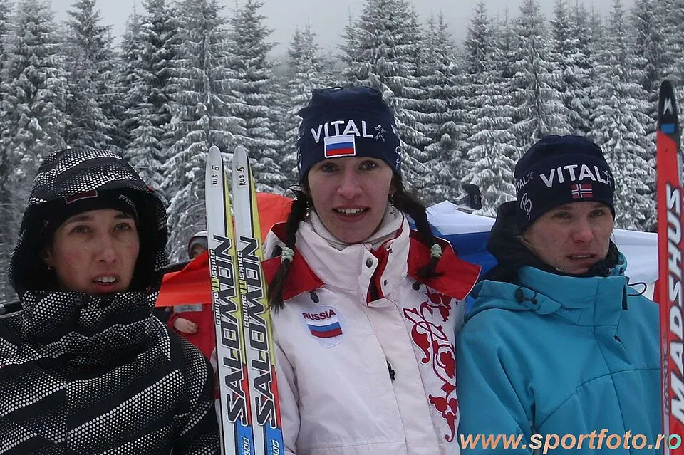
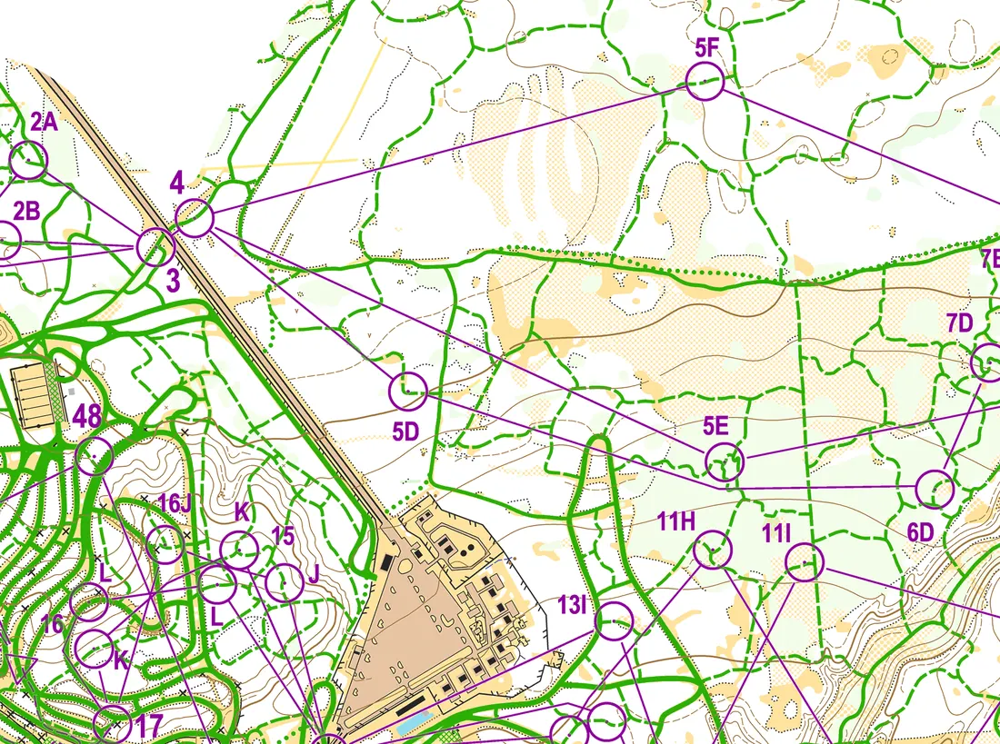
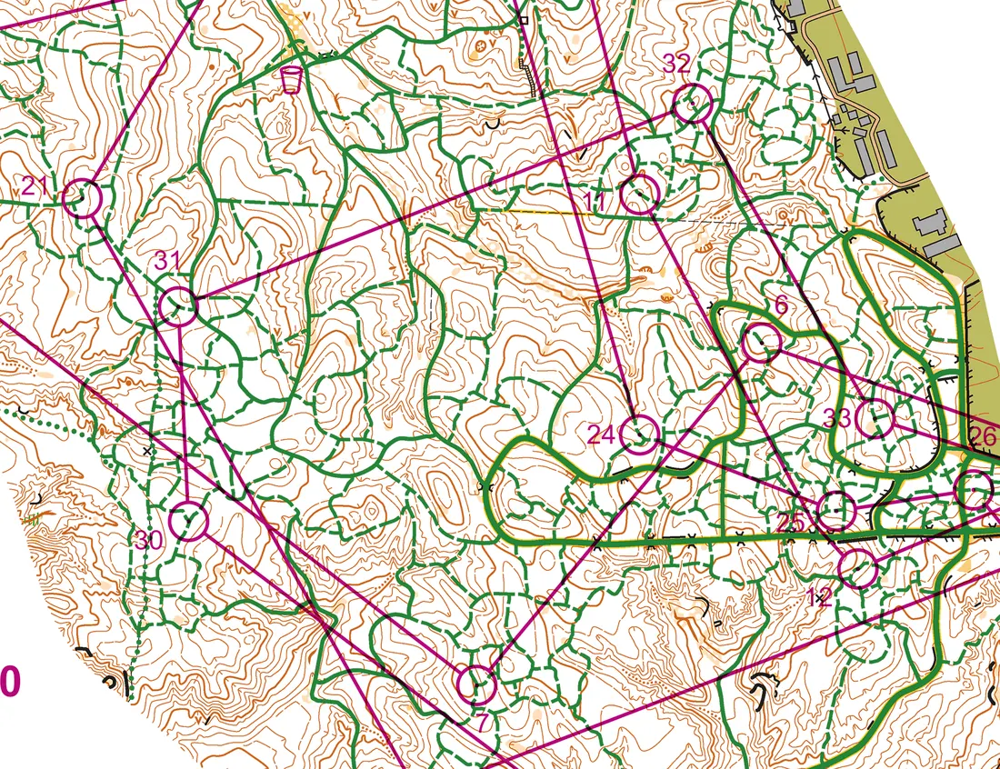
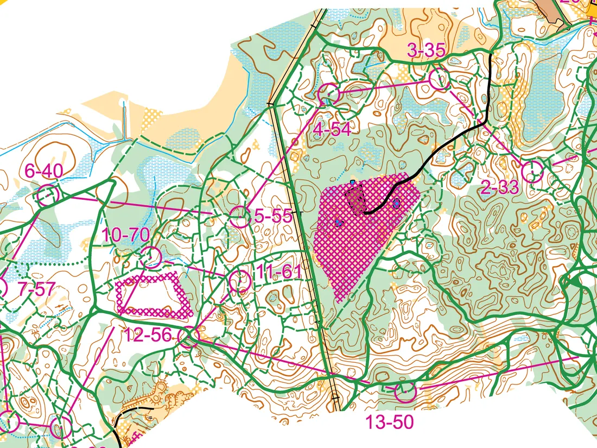
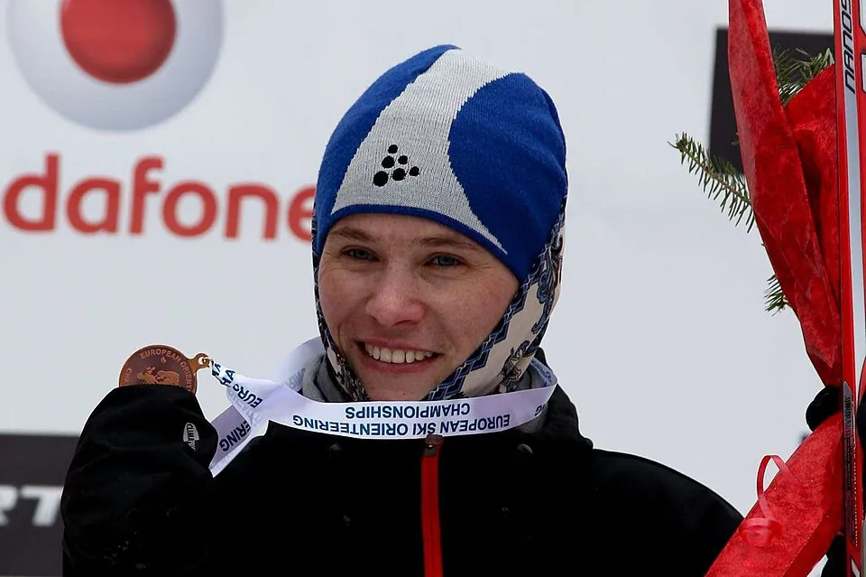
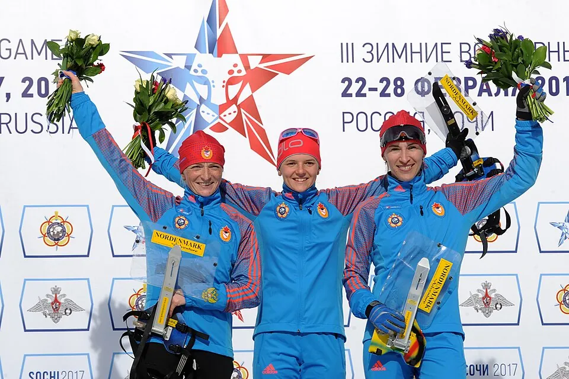
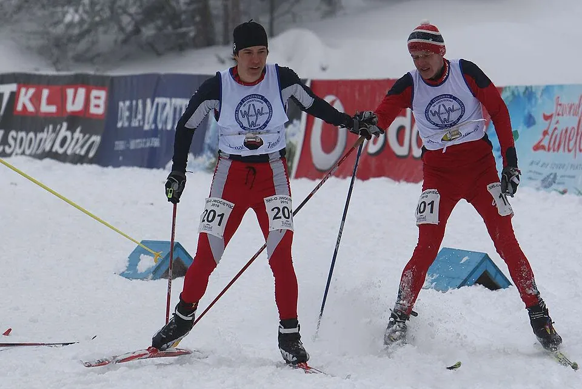
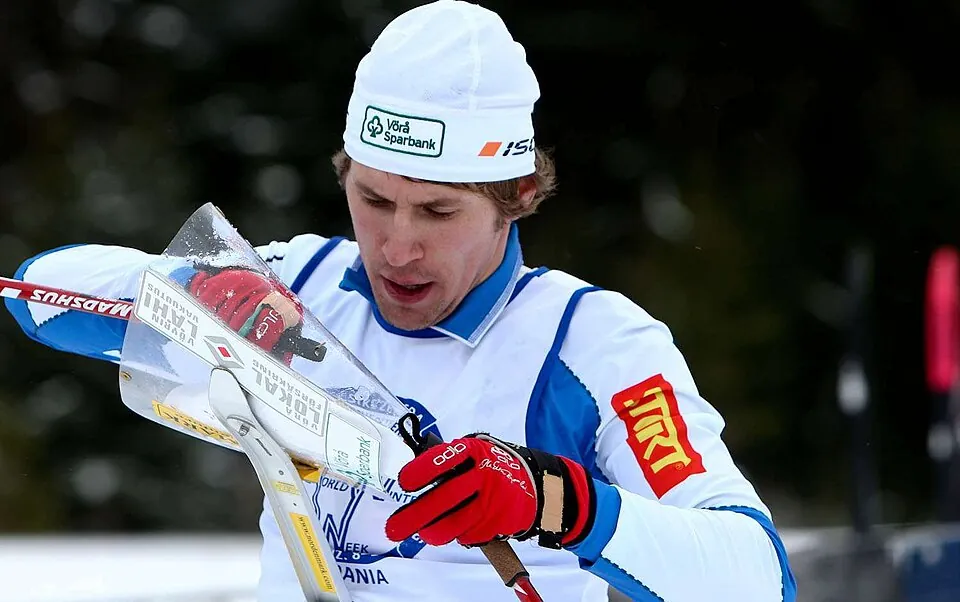

Самый «российский» из чемпионатов IOF
Чемпионат Европы по лыжному ориентированию, который проводит Международная федерация ориентирования (IOF), — младший брат мирового первенства. Он появился в 2001 году, а с 2010 года стал ежегодным, заполнив промежутки между чемпионатами мира. Четыре раза из восемнадцати его принимала Россия, и почти два десятилетия российские лыжники были на нём главной силой.
Программа повторяет мировую: спринт, миддл, длинная дистанция и эстафета, с 2012 года — смешанная спринт-эстафета (мужчина и женщина бегут попеременно).
- Первый чемпионат
- 2001, Вологда (Россия)
- Периодичность
- раз в два года до 2010; затем ежегодно; с 2023 — по нечётным годам
- В России
- Вологда 2001, Иваново 2006, Тюмень 2014, Ханты-Мансийск 2020
- Отменён
- 2021 (COVID-19)
2001–2010: эпоха Татьяны Власовой
Первый чемпионат Европы прошёл в марте 2001 года в Вологде. Хозяева сразу показали силу: Виктор Корчагин выиграл спринт, Татьяна Власова — длинную дистанцию, а женская эстафета Ирина Онищенко — Наталья Томилова — Татьяна Власова стала чемпионской. В 2003 году в итальянских Доломитах Эдуард Хренников выиграл спринт, а Власова — миддл.
Вернувшись в Россию, в 2006 году чемпионат прошёл в Иванове: Власова выиграла спринт и миддл, и снова первой была женская эстафета. А длинную дистанцию у мужчин шведы забрали целиком, всем пьедесталом — и повторили это через два года. В 2008 году в швейцарском Шчанфе Власова выиграла все три личные гонки, Андрей Груздев — миддл.
Чемпионат 2010 года в румынском Меркуря-Чуке стал «дублем» лидеров сборной: и Власова, и Хренников выиграли спринт и миддл. Всего у Татьяны Власовой десять личных титулов чемпионки Европы.

2011–2020: ежегодный чемпионат

С 2010 года чемпионат Европы стал ежегодным. В 2012 году в украинских Сумах в программу вошла смешанная спринт-эстафета, и первыми её выиграли Андрей Григорьев и Полина Мальчикова. На длинной дистанции в те же годы трижды подряд (2010–2012) побеждал финн Стаффан Тунис.
Чемпионат 2014 года в Тюмени начался победой в смешанной спринт-эстафете Владимира Барчукова и Юлии Тарасенко; Андрей Ламов выиграл спринт, Барчуков — миддл, а длинную дистанцию — болгарин Станимир Беломажев. Именно Ламов стал главным героем десятилетия: семь личных титулов чемпиона Европы в 2014–2020 годах.
География расширялась: в 2019 году чемпионат прошёл в турецком Сарыкамыше, а в марте 2020 года в Ханты-Мансийске — буквально за несколько дней до того, как пандемия остановила мировой спорт. Хозяева забрали почти всё: Сергей Горланов выиграл спринт и миддл, Ламов и Марина Вяткина — длинную дистанцию, мужская эстафета — золото.

С 2022 года

Чемпионат 2022 года в болгарском Чепеларе прошёл в январе — это один из последних стартов IOF с участием сборной России. Владислав Киселёв выиграл спринт и миддл, Мария Кечкина — миддл и длинную дистанцию, а у мужчин на длинной первым был норвежец Йорген Баклид, будущий многократный чемпион мира.
После этого чемпионат Европы перешёл на нечётные годы, чередуясь с мировым: 2023 — латвийская Мадона (второй раз после 2013 года), 2025 — финский Посио.

Герои




Татьяна Власова — десять личных титулов (2001–2011) и несколько эстафетных; Мария Кечкина — пять (2016, 2018, 2022); Андрей Ламов — семь (2014–2020); Эдуард Хренников — пять, с 2003 по 2018 год, то есть за 15 лет. Среди иностранцев — финн Стаффан Тунис и болгарин Станимир Беломажев, многолетний соперник россиян, выигравший у них и чемпионат Европы, и (в 2022 году) чемпионат мира.
Смотреть
Источники
Даты, места и составы — Календарь O-Maps; статья Википедии Чемпионат Европы по спортивному ориентированию на лыжах. Фрагменты карт — GPSSeuranta, TrackSport, SportRec; фотографии — Wikimedia Commons (авторы и лицензии указаны в подписях).Все старты серии с протоколами, картами, GPS-трансляциями и видео: в календаре и на странице чемпионата.